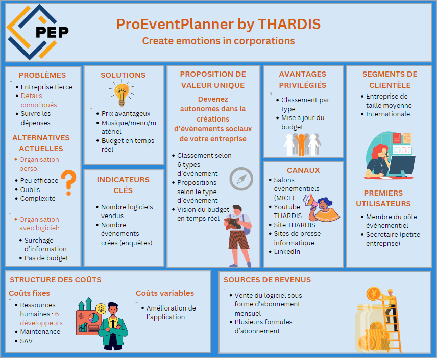

Informations complémentaires
Dans le cadre du projet de fin de première année à l'IUT, nous avons entièrement conçu une application, nommée ProEventPlanner, en équipe de six. Nous avons suivi toutes les étapes d'un projet en commençant par de la gestion de projet, puis de la conception, du développement et enfin la présentation de notre application.
Après avoir défini le type d'application que nous voulions, nous avons rédigé un dossier de conception constitué de diagrammes UML destiné à préparer le développement de l'application. Nous avons réalisé un diagramme de cas d'utilisation dont les fonctionnalités sont détaillées. Nous avons aussi construit des diagrammes de classes et d'objets, et enfin des diagrammes de séquences.
Ce dossier est consultable et téléchargeable ci-dessous :
Dans un second temps, nous avons rédigé un dossier de conception d'interface afin de définir l'esthétique de notre application. Pour cela, nous avons défini des personnas afin de connaître les besoins de nos potentiels utilisateurs. Ensuite nous avons fait un wireframe de l'application grâce à Whimsical. Nous avons également fait attention à respecter les critères ergonomiques de Bastien & Scapin dans nos interfaces.
Ce dossier est également consultable et téléchargeable ci-dessous :
Nous avons ensuite développé l'application pendant toute une semaine en utilisant Java pour le Back-end et FXML pour le Front-end. Nous avons utilisé le logiciel IntellIJ.
ProEventPlanner.zip, il s'agit du code de l'application.
La dernière étape du projet fût de présenter à l'oral notre application sous forme de deux oraux :
- un pour présenter le code et le fonctionnement de l'application;
- un pour vendre l'application à des investisseurs pour lequel nous avons réalisé le support suivant :
